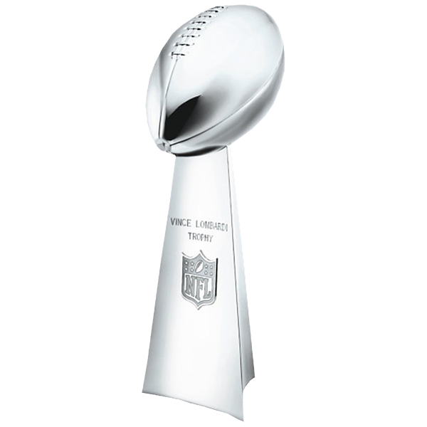
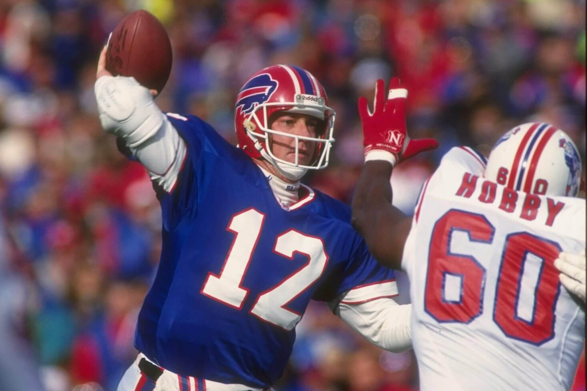

In 1990, the Bills implemented a no-huddle offense, which proved to be the most efficient in the league. This led them to a Super Bowl appearance in Super Bowl XXV against the New York Giants, who stifled the Bills offense by keeping the ball away from them. The game ended on a missed 47 yard go-ahead field goal attempt by Bills kicker Scott Norwood, making the final score 20-19. In 1991, the Bills stayed dominant, but ended the season in disappointment again, making, but losing Super Bowl XXVI to the Washington Redskins 37-24. In the final game of the 1992 season, Jim Kelly got hurt, and backup QB Frank Reich started the wild card game against the Houston Oilers. After being down 35-3 early in the third quarter, Frank Reich engineered the largest comeback in NFL history (until that record was broken in 2022) with a final score of 41-38. They made it to Super Bowl XXVII, but were blown out by the Dallas Cowboys by a score of 52-17. The Bills made the Super Bowl for a fourth consecutive year in 1993, but lost again to the Cowboys 30-13, becoming the only team in NFL history to make (and lose) four consecutive Super Bowls. The Bills were quiet for the rest of the decade, declining into a drought in the 2000s.
